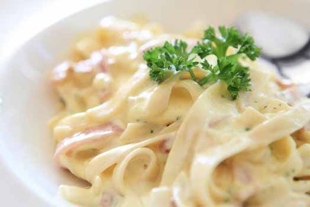
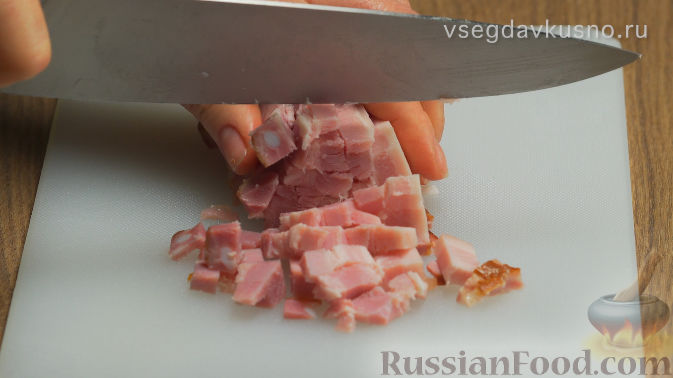
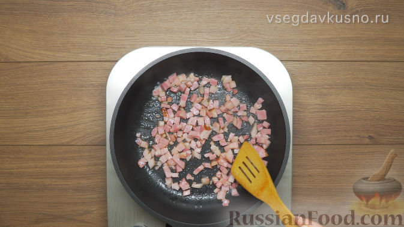
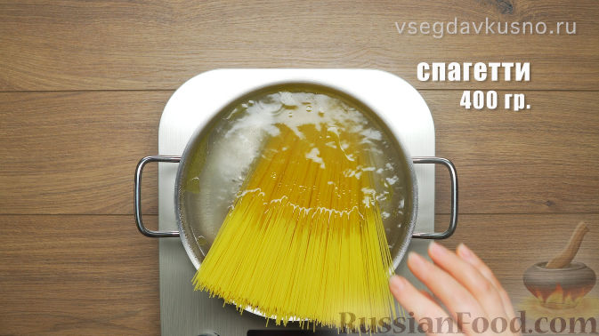
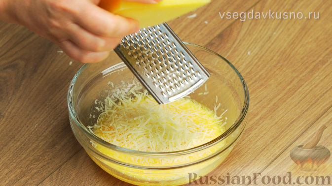
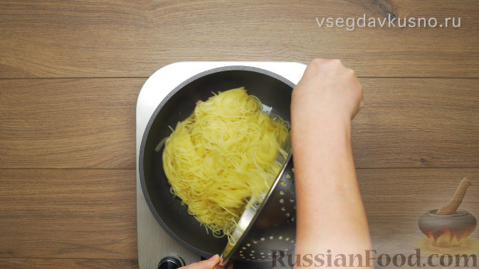
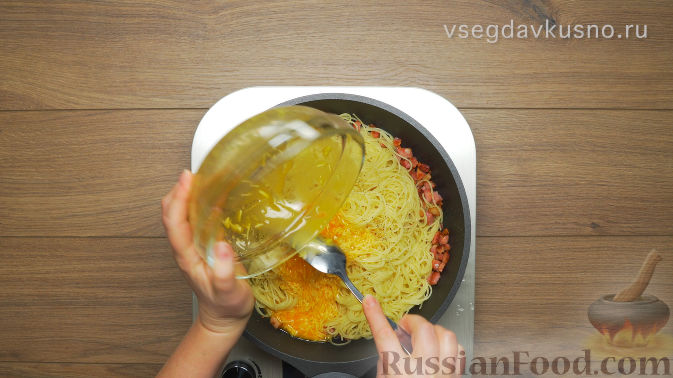
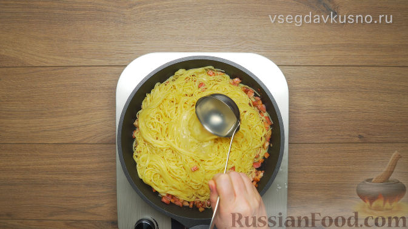
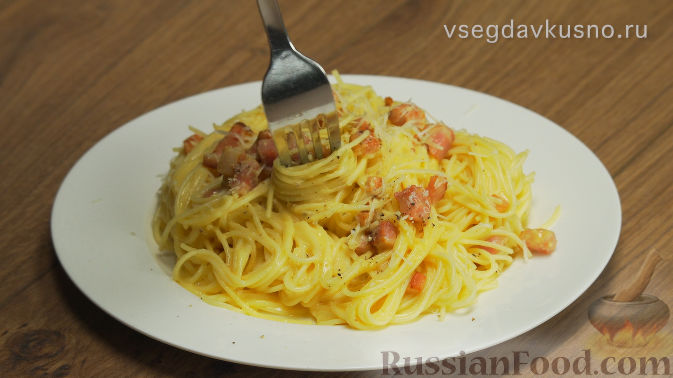

Паста "Карбонара"

Продукты
Спагетти - 400 г
Грудинка варено-копчёная - 200 г
Яйцо куриное - 1 шт.
Желтки - 3 шт.
Сыр пармезан - 75 г
Масло сливочное - 2 ст.ложки
Масло оливковое - 1 ст.ложка
Чеснок - 2 зубчика
Соль, перец - по вкусу
Способ приготовления

1. Нарезать грудинку мелкими кубиками.

2. Разогреть сковороду, растопить 1 ст. ложку сливочного масла и отправить туда грудинку. Добавить 2 зубчика чеснока, предварительно раздавленных ножом. Грудинку обжаривать на маленьком огне 10 минут, из неё должен вытопиться жир, но она должна остаться мягкой. После обжаривания чеснок убрать.

3. В кипящую воду добавляем 1 ст. ложку соли, 1 ст. ложку оливкового масла и спагетти. Варим так, как указано на упаковке спагетти, - важно соблюдать указанное время варки, чтобы сварить спагетти правильно.

4.
У трёх яиц отделить белки от желтков. Отправить в миску 3 желтка и одно яйцо с белком, посолить и поперчить (по 1 щепотке), хорошо взбить и добавить 2 ст. ложки натертого сыра. Перемешать.

5. Готовые спагетти откинуть на дуршлаг, предварительно оставив 1,5 стакана воды, в которой они варились.

6.
Выключить огонь под сковородой с грудинкой, отправить туда спагетти, добавить 1 ст. ложку сливочного масла и вылить взбитые яйца с сыром.

7. Все тщательно перемешать, постепенно добавить 1 стакан воды от спагетти и 2 ст. ложки сыра, постоянно перемешивая, чтобы яйца не свернулись.

8. Распределить спагетти по тарелкам, сверху добавить грудинку, посыпать черным молотым перцем и тертым сыром. Паста карбонара готова.
Всегда вкусно!